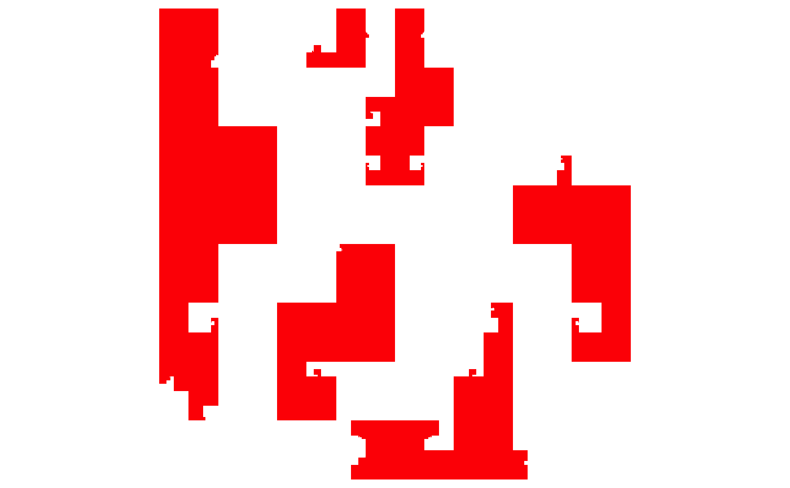
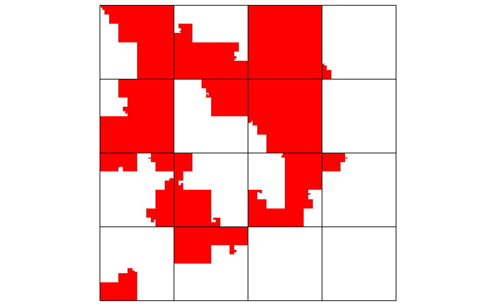

hc_layer-HilbertCurve-method.RdAdd a new layer to the Hilbert curve
# S4 method for HilbertCurve hc_layer(object, ir = NULL, x1 = NULL, x2 = x1, col = "red", border = NA, mean_mode = c("w0", "absolute", "weighted"), grid_line = 0, grid_line_col = "black", overlay = default_overlay)
| object | A |
|---|---|
| ir | an |
| x1 | if start positions are not integers, they can be set by |
| x2 | if end positions are not integers, they can be set by |
| col | a scalar or a vector of colors which correspond to intervals in |
| border | a scalar or a vector of colors for the borders of intervals. Set it to |
| mean_mode | Under 'pixel' mode, each pixel represents a small window. This argument provides methods to summarize value for the small window if the input intervals can not completely overlap with the window. See explanation in |
| grid_line | whether add grid lines to show blocks of the Hilber curve. It should be an integer number and there will be |
| grid_line_col | color for the grid lines |
| overlay | a self-defined function which defines how to overlay new layer to the plot. By default it is |
This function only works under 'pixel' mode.
Under "pixel" mode, color is the only graphic representation of values in the input intervals.
To make a more precise and robust color mapping, users may consider colorRamp2 to create
a color mapping function.
If you want to add more than one layers to the curve, remember to set colors with transparency.
overlay argument is useful for changing color themes for the overlapped areas, please refer to the vignette
to see examples of how to swith color themes in easy ways.
No value is returned.
x = sort(sample(100, 20)) s = x[1:10*2 - 1] e = x[1:10*2] require(IRanges) ir = IRanges(s, e) hc_layer(hc, ir)